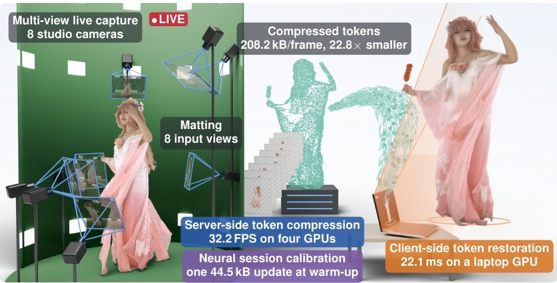

HoloSplat: Real-Time Token Streaming for Feed-Forward Human Reconstruction
Preprint, 2026
Streams live human volumetric video as compact feature tokens instead of explicit 3D Gaussians: 32.2 FPS on four RTX 5090 GPUs at 50 Mbit/s, 22.1 ms per-frame client decoding on a laptop RTX 3050 Ti, and 22.8× less data than float32 Gaussians.